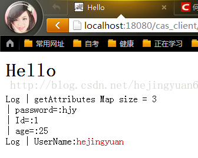
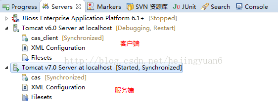

从cas server登录成功后，默认只能从cas server得到用户名。但程序中也可能遇到需要得到更多如姓名，手机号，email等更多用户信息的情况。
cas client拿到用户名后再到数据库中查询，的确可以得到关于该用户的更多信息。
但是如果用户登录成功后，直接从cas server返回给cas client用户的详细信息，这也是一个不错的做法。这个好处，尤其是在分布式中得以彰显，cas server可以把用户信息传递给各个应用系统，如果是上面那种做法，那么各个系统得到用户名后，都得去数据库中查询一遍，无疑是一件重复性工作。
首先，你需要到WEB-INF目录找到 deployerConfigContext.xml文件，同时配置 attributeRepository 如下：
<bean class="org.jasig.services.persondir.support.jdbc.SingleRowJdbcPersonAttributeDao" id="attributeRepository">
<constructor-arg index="0" ref="dataSource"/>
<constructor-arg index="1" value="select * from t_user where {0}"/>
<property name="queryAttributeMapping">
<map>
<!--这里的key需写username和登录页面一致，value对应数据库用户名字段-->
<entry key="username" value="loginname"/>
</map>
</property>
<property name="resultAttributeMapping">
<map>
<!--key为对应的数据库字段名称，value为提供给客户端获取的属性名字，系统会自动填充值-->
<entry key="Id" value="Id"/>
<entry key="password" value="password"/>
<entry key="age" value="age"/>
</map>
</property>
<!-- <property name="queryType">
<value>OR</value>
</property> -->
</bean>
其中：
切记：查询出来的字段名中间不能使用 _ (下划线)，否则获取不到数据，如 cell_phone 需要 设置别名为 cellPhone.
queryAttributeMapping是组装sql用的查询条件属性，上述配置后，结合封装成查询sql就是 select* from userinfo where loginname=#username#
resultAttributeMapping是sql执行完毕后返回的结构属性， key对应数据库字段，value对应客户端获取参数。
如果要组装多个查询条件，需要加上下面这个，默认为AND
<property name="queryType">
<value>OR</value>
</property>
也是在 deployerConfigContext.xml中，为 UsernamePasswordCredentialsToPrincipalResolver注入 attributeRepository，那么 attributeRepository就会被触发并通过此类进行解析，红色为新添部分。
<property name="credentialsToPrincipalResolvers"> <list> <bean class="org.jasig.cas.authentication.principal.UsernamePasswordCredentialsToPrincipalResolver" > <property name="attributeRepository" ref="attributeRepository" /> </bean> <bean class="org.jasig.cas.authentication.principal.HttpBasedServiceCredentialsToPrincipalResolver" /> </list> </property>
中的 org.jasig.cas.services.InMemoryServiceRegistryDaoImpl的属性 registeredServices
修改 registeredServices 列表中的每个协议中的 allowedAttributes属性的值。列出的每个值，在客户端就可以访问了
<bean
id="serviceRegistryDao"
class="org.jasig.cas.services.InMemoryServiceRegistryDaoImpl">
<property name="registeredServices">
<list>
<bean class="org.jasig.cas.services.RegexRegisteredService">
<property name="id" value="0" />
<property name="name" value="HTTP and IMAP" />
<property name="description" value="Allows HTTP(S) and IMAP(S) protocols" />
<property name="serviceId" value="^(https?|imaps?)://.*" />
<property name="evaluationOrder" value="10000001" />
<property name="allowedAttributes">
<list>
<value>Id</value>
<value>password</value>
<value>age</value>
</list>
</property>
</bean>
此步骤灰常重要，可以看看 org.jasig.cas.services.RegexRegisteredService的源码，其中的 allowedAttributes是关键
【提示】网上说此bean中的ignoreAttributes属性默认是不添加用户信息，查看了 CAS 3.5.2版本的 AbstractRegisteredService 源码后，发现其默认值就是 false，即：添加属性后，客户端就可见了
WEB-INF/view/jsp/protocol/2.0/casServiceValidationSuccess.jsp
在server验证成功后，这个页面负责生成与客户端交互的xml信息，在默认的casServiceValidationSuccess.jsp中，只包括用户名，并不提供其他的属性信息，因此需要对页面进行扩展，如下，红色为新添加部分
<cas:serviceResponse xmlns:cas='http://www.yale.edu/tp/cas'>
<cas:authenticationSuccess>
<cas:user>${fn:escapeXml(assertion.chainedAuthentications[fn:length(assertion.chainedAuthentications)-1].principal.id)}</cas:user>
<c:if test="${fn:length(assertion.chainedAuthentications[fn:length(assertion.chainedAuthentications)-1].principal.attributes) > 0}">
<cas:attributes>
<c:forEach var="attr" items="${assertion.chainedAuthentications[fn:length(assertion.chainedAuthentications)-1].principal.attributes}">
<cas:${fn:escapeXml(attr.key)}>${fn:escapeXml(attr.value)}</cas:${fn:escapeXml(attr.key)}>
</c:forEach>
</cas:attributes>
</c:if>
<c:if test="${not empty pgtIou}">
<cas:proxyGrantingTicket>${pgtIou}</cas:proxyGrantingTicket>
</c:if>
<c:if test="${fn:length(assertion.chainedAuthentications) > 1}">
<cas:proxies>
<c:forEach var="proxy" items="${assertion.chainedAuthentications}" varStatus="loopStatus" begin="0" end="${fn:length(assertion.chainedAuthentications)-2}" step="1">
<cas:proxy>${fn:escapeXml(proxy.principal.id)}</cas:proxy>
</c:forEach>
</cas:proxies>
</c:if>
</cas:authenticationSuccess>
</cas:serviceResponse>
通过完成上面四个步骤的配置后，CAS Server端的工作就完成了，那么如何在客户端获取这些信息呢？下面进行说明：
AttributePrincipal principal = (AttributePrincipal) request.getUserPrincipal();
Map attributes = principal.getAttributes();
String email=attributes .get("age");
补充：
web.xml
<?xml version="1.0" encoding="UTF-8"?>
<web-app xmlns:xsi="http://www.w3.org/2001/XMLSchema-instance" xmlns="http://java.sun.com/xml/ns/javaee" xmlns:web="http://java.sun.com/xml/ns/javaee/web-app_2_5.xsd" xsi:schemaLocation="http://java.sun.com/xml/ns/javaee http://java.sun.com/xml/ns/javaee/web-app_2_5.xsd" id="WebApp_ID" version="2.5">
<display-name>cas_client</display-name>
<welcome-file-list>
<welcome-file>userInfoView.jsp</welcome-file>
</welcome-file-list>
<!-- ======================== 单点登录开始 ======================== -->
<!-- 用于单点退出，该过滤器用于实现单点登出功能，可选配置-->
<listener>
<listener-class>org.jasig.cas.client.session.SingleSignOutHttpSessionListener</listener-class>
</listener>
<filter>
<filter-name>CAS Single Sign Out Filter</filter-name>
<filter-class>org.jasig.cas.client.session.SingleSignOutFilter</filter-class>
</filter>
<filter-mapping>
<filter-name>CAS Single Sign Out Filter</filter-name>
<url-pattern>/*</url-pattern>
</filter-mapping>
<filter>
<filter-name>CAS Filter</filter-name>
<filter-class>org.jasig.cas.client.authentication.AuthenticationFilter</filter-class>
<init-param>
<param-name>casServerLoginUrl</param-name>
<param-value>http://localhost:8080/cas</param-value>
</init-param>
<init-param>
<param-name>serverName</param-name>
<param-value>http://localhost:18080</param-value>
</init-param>
</filter>
<filter-mapping>
<filter-name>CAS Filter</filter-name>
<url-pattern>/*</url-pattern>
</filter-mapping>
<!-- 该过滤器负责对Ticket的校验工作，必须启用它 -->
<filter>
<filter-name>CAS Validation Filter</filter-name>
<filter-class>
org.jasig.cas.client.validation.Cas20ProxyReceivingTicketValidationFilter</filter-class>
<init-param>
<param-name>casServerUrlPrefix</param-name>
<param-value>http://localhost:8080/cas</param-value>
</init-param>
<init-param>
<param-name>serverName</param-name>
<param-value>http://localhost:18080</param-value>
</init-param>
</filter>
<filter-mapping>
<filter-name>CAS Validation Filter</filter-name>
<url-pattern>/*</url-pattern>
</filter-mapping>
<!-- 该过滤器负责实现HttpServletRequest请求的包裹， -->
<!-- 比如允许开发者通过HttpServletRequest的getRemoteUser()方法获得SSO登录用户的登录名，可选配置。 -->
<filter>
<filter-name>CAS HttpServletRequest Wrapper Filter</filter-name>
<filter-class>
org.jasig.cas.client.util.HttpServletRequestWrapperFilter</filter-class>
</filter>
<filter-mapping>
<filter-name>CAS HttpServletRequest Wrapper Filter</filter-name>
<url-pattern>/*</url-pattern>
</filter-mapping>
<!-- 该过滤器使得开发者可以通过org.jasig.cas.client.util.AssertionHolder来获取用户的登录名。 -->
<!-- 比如AssertionHolder.getAssertion().getPrincipal().getName()。根据客户端获取的方式可以选择使用这两种 -->
<!-- <filter>
<filter-name>CAS Assertion Thread Local Filter</filter-name>
<filter-class>org.jasig.cas.client.util.AssertionThreadLocalFilter</filter-class>
</filter>
<filter-mapping>
<filter-name>CAS Assertion Thread Local Filter</filter-name>
<url-pattern>/*</url-pattern>
</filter-mapping> -->
<!-- ======================== 单点登录结束 ======================== -->
<servlet>
<servlet-name>HelloWorldExample</servlet-name>
<servlet-class>com.tgb.cas.client.HelloWorldExample</servlet-class>
</servlet>
<servlet-mapping>
<servlet-name>HelloWorldExample</servlet-name>
<url-pattern>/servlet/HelloWorldExample</url-pattern>
</servlet-mapping>
</web-app>
HelloWorldExample：
public class HelloWorldExample extends HttpServlet {
private static final long serialVersionUID = 1L;
public void doGet(HttpServletRequest request, HttpServletResponse response)
throws IOException, ServletException {
response.setContentType("text/html");
PrintWriter out = response.getWriter();
out.println("<html>");
out.println("<head>");
String title = "Hello";
out.println("<title>" + title + "</title>");
out.println("</head>");
out.println("<body bgcolor=\"white\">");
out.println("<a href=\"../helloworld.html\">");
out.println("<img src=\"../images/code.gif\" height=24 "
+ "width=24 align=right border=0 alt=\"view code\"></a>");
out.println("<a href=\"../index.html\">");
out.println("<img src=\"../images/return.gif\" height=24 "
+ "width=24 align=right border=0 alt=\"return\"></a>");
out.println("<h1>" + title + "</h1>");
//以下是两种获取用户信息的两种方式，分别与Web.XML中的配置相对应，大家结合理解
// 通过 CAS HttpServletRequest Wrapper Filter 获取用户信息
String userNameString = request.getRemoteUser();
AttributePrincipal principal = (AttributePrincipal) request.getUserPrincipal();
if (null != principal) {
Map<String, Object> attMap = principal.getAttributes();
out.println(" Log | getAttributes Map size = " + attMap.size() + "<br>");
for (Entry<String, Object> entry : attMap.entrySet()) {
out.println(" | " + entry.getKey() + "=:" + entry.getValue() + "<br>");
}
String username = null;
out.print(" Log | UserName:");
if (null != principal) {
username = principal.getName();
out.println("<span style='color:red;'>" + username + "</span><br>");
}
}
// 通过CAS Assertion Thread Local Filter 获取用户信息，共两种方式
// Assertion assertion = (Assertion) request.getSession().getAttribute(
// AbstractCasFilter.CONST_CAS_ASSERTION);
// if (null != assertion) {
//
// Map<String, Object> attMap = assertion.getPrincipal().getAttributes();
// out.println(" Log | getAttributes Map size = " + attMap.size() + "<br>");
// for (Entry<String, Object> entry : attMap.entrySet()) {
// out.println(" | " + entry.getKey() + "=:" + entry.getValue() + "<br>");
// }
//
// AttributePrincipal principal = assertion.getPrincipal();
// // AttributePrincipal principal = (AttributePrincipal) request
// // .getUserPrincipal();
// String username = null;
// out.print(" Log | UserName:");
// if (null != principal) {
// username = principal.getName();
// out.println("<span style='color:red;'>" + username + "</span><br>");
// }
// }
out.println("</body>");
out.println("</html>");
}
}
userInfoView.jsp（未使用）：
<%@ page language="java" contentType="text/html; charset=UTF-8"
pageEncoding="UTF-8"%>
<!DOCTYPE html PUBLIC "-//W3C//DTD HTML 4.01 Transitional//EN" "http://www.w3.org/TR/html4/loose.dtd">
<html>
<head>
<meta http-equiv="Content-Type" content="text/html; charset=UTF-8">
<title>Insert title here</title>
</head>
<body>
<a href="servlet/HelloWorldExample">获取Server端用户信息</a>
<br>
<a href="http://localhost:8080/cas/logout?service=http://localhost:18080/cas_client/servlet/HelloWorldExample">单点退出</a>
</body>
</html>
访问：http://localhost:18080/cas_client/servlet/HelloWorldExample

附：

其中cas服务端对应的代码是官网中提供的cas-server-webapp-3.5.2.war，而cas_client客户端代码是我们自己编写的，参照tomcat中的example项目。
CAS返回更多用户信息这方面的文章有很多，在这里我再次进行总结学习也是为了梳理自己的知识，让自己加深理解。以上只是一个简单的知识点，大家理解就好，接下来会结合Spring进行学习。